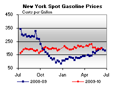

Released on June 16, 2010
(Next Release on June 23, 2010)
Keep an Eye on More than WTI
The price path of different crude oil benchmarks has not been smooth over the past year, with oil prices moving up and down (Figure 1) as the market tests new levels amid numerous uncertainties, including changing perceptions of global economic recovery and renewed world oil demand growth. West Texas Intermediate (WTI) typically sells at a discount to Louisiana Light Sweet (LLS) and at a premium to another benchmark crude oil, Brent, due to the differences in quality and location.
Figure 1. Until recently, crude oil prices have trended upward over the last year
After peaks in April and the first days of May, crude oil prices dropped sharply in May, with uncertainty over the pace and extent of recovery, particularly given European debt issues and Chinese money policy tightening, reportedly contributing to the decline. Nevertheless, by the end of May, oil prices had reversed course again, supported by continuing strength in Chinese demand and growing signs of demand recovery in the United States.
Typically, different crude benchmark prices tend to move in the same direction, even during short-term price swings. But recently, WTI has exhibited larger swings than other crudes, dropping more than either Brent or LLS in May, and rebounding faster. Figure 2 shows the differences in prices for these crude oils, highlighting the dip or “discount” in WTI below Brent price levels, while also illustrating that the relationship between Brent and LLS varied very little. However, as crude prices began to rise again towards the end of May, the WTI discount began to fade, with WTI resuming a more typical relationship to Brent.
Figure 2. Crude price difference: WTI fell relative to other crude oils earlier this spring
Some traders and analysts have argued that the exaggerated decline and subsequent increase in WTI prices reflects localized supply conditions at Cushing, OK, the delivery point for the NYMEX Light, Sweet Crude Oil Contract. Storage at Cushing is inaccessible by tanker or barge, and few out-flowing pipelines exist; hence, excess crude oil can be slow to dissipate once a glut develops. Such a glut was evident this past spring as Cushing inventories reached a new record level of 37.9 million barrels as of the week ending May 14.
Since then, the forces underlying the Cushing stock build have begun shifting. Refinery runs have picked up as maintenance is ending and motor gasoline product demand is rising seasonally. With crude oil inputs to refineries in the Midwest increasing 12 percent since the week ending March 26, Cushing inventory builds have slowed, even dropping twice in the last four weeks. Along with this trend in inventories, prompt-month futures prices rose relative to contracts with later expiry dates, while, at the same time, WTI prices relative to other benchmark crudes have begun to return to more typical levels.
Temporary discontinuities in WTI relative to the prices of other crude oils occur occasionally, and this most recent example is a reminder that market observers may want to follow other crude prices, not just WTI, as it does not always exactly follow the broader oil market. In particular, as prices have increased recently, WTI has risen more than other crude oils as it returns to a more typical relationship to them.
U.S. Gasoline and Diesel Prices Continue to Drop
The U.S. average price for regular gasoline has declined for five consecutive weeks. Prices dropped by over 2 cents to hit $2.70 per gallon, 3 cents higher than a year ago. Over the last five weeks, the price for regular gasoline has decreased by over 20 cents per gallon. The averages fell in all regions of the country with the East Coast price falling by about three cents to $2.66 per gallon. The Midwest and Rocky Mountain averages slipped two cents to $2.64 per gallon and $2.77 per gallon, respectively. The lowest price was found in the Gulf Coast at $2.58 per gallon, after a decline of more than 3 cents. The prices on the West Coast and in California dipped a penny and a half to $2.99 per gallon and $3.05 per gallon, respectively.
The national average price for diesel fuel also fell for the fifth week in a row, dropping two cents to $2.93 per gallon, $0.36 above a year ago. Prices fell in all regions of the country as the East Coast declined two cents to $2.95 per gallon. The Midwest price dipped a cent to $2.89 per gallon. The Gulf Coast and Rocky Mountain averages fell about three cents to $2.87 per gallon and $2.99 per gallon, respectively. The average on the West Coast slid less than half a cent to $3.05 per gallon. In California, the average was unchanged at $3.07 per gallon.
Propane Inventories Continue Ascent
Propane stockholders added a robust 2.2 million barrels to U.S. propane inventories, to settle at 45.1 million barrels. But the build fell short of moving them closer to prior-year levels, with stocks remaining 8.4 million barrels below the June 12, 2009 reported total. The gain was led by the Midwest region, which added 1.6 million barrels of stocks. The Gulf Coast region received 0.4 million barrels, while the Rocky Mountain/West Coast and the East Coast regions each added 0.1 million barrels of propane inventory. Propylene non-fuel use inventories decreased their share of total propane/propylene stocks from 7.9 percent to 7.1 percent.
Text from the previous editions of “This Week In Petroleum” is accessible through a link at the top right-hand corner of this page.
| Retail Prices (Cents Per Gallon) | |||||||
| Retail Data | Changes From | Retail Data | Changes From | ||||
| 06/14/10 | Week | Year | 06/14/10 | Week | Year | ||
| Gasoline | 270.1 | Diesel Fuel | 292.8 | ||||
| Spot Prices (Cents Per Gallon*) | |||||||||||||||||||||||||||||||||||
|  | |||||||||||||||||||||||||||||||||||
|
|||||||||||||||||||||||||||||||||||
| *Note: Crude Oil WTI Price in Dollars per Barrel. | |||||||||||||||||||||||||||||||||||
| Stocks (Million Barrels) | |||||||
| Stocks Data | Changes From | Stocks Data | Changes From | ||||
| 06/11/10 | Week | Year | 06/11/10 | Week | Year | ||
| Crude Oil | 363.1 | Distillate | 156.6 | ||||
| Gasoline | 218.3 | Propane | 45.130 | ||||